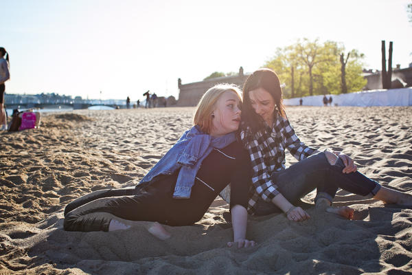

Сплав на байдарках в две строки

перейти на сайт
Девочка, 10 лет. Познавательный отдыхАннотация книги в несколько абзацев. В тот момент, как ребёнок научился говорить, и не одно слово, а задавать бесконечное количество вопросов, жизнь меняется. Вы будете не понимать друг друга, потом понимать чуть лучше и, в конце концов, научитесь даже шутить. В тот момент, как ребёнок научился говорить, и не одно слово, а задавать бесконечное количество вопросов, жизнь меняется.
Аннотация статьи в несколько абзацев. Аннотация статьи в несколько абзацев. В тот момент, как ребёнок научился говорить, и не одно слово, а задавать бесконечное количество вопросов, жизнь меняется. Вы будете не понимать друг друга, потом понимать чуть лучше и, в конце концов, научитесь даже шутить. Аннотация статьи в несколько абзацев.